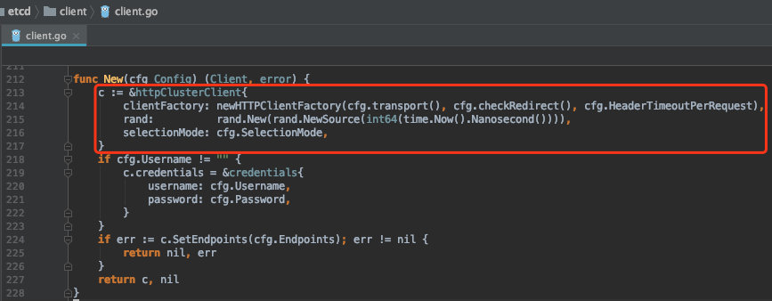
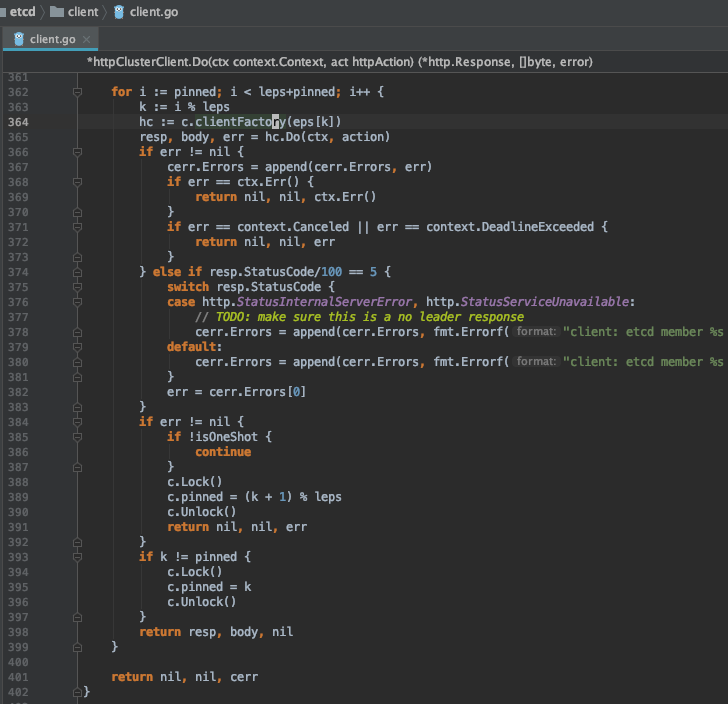

etcd api client 请求重试逻辑
使用 Consul 作为配置中心，按照官方的说法，没必要创建 consul client 节点。那么直接连 consul server 就好了。
Running an agent is not required for discovering other services or getting/setting key/value data. The agent is responsible for health checking the services on the node as well as the node itself.
https://www.consul.io/intro/index.html#basic-architecture-of-consul
Consul api client (https://github.com/hashicorp/consul/tree/master/api) 目前只能接收一个server地址。那么这个server地址得保证高可用才行啊。
etcd api client (https://github.com/etcd-io/etcd/tree/master/client) 倒是能接收多个server地址，看看 etcd 是怎么做的。
etcd api client
创建了 httpClusterClient。

多个 endpoint 的处理核心逻辑。https://github.com/etcd-io/etcd/blob/master/client/client.go#L362

- pinned 用于记录好用的连接地址的index，优先使用这个地址。
- context 类错误，比如取消请求，直接退出。
- 遇到 5xx 类错误，服务端错误。需要考虑是否重试了。
- isOneShot 标记，true 代表是 Set/Delete 操作，请求失败不再重试。应该跟请求是否幂等有关。
- 可以重试的请求，重试直到成功或是循环结束。
Last modified on 2020-04-17